Once you've made a selection set and wish to export the data for use in Excel or other spreadsheet format, click the Export button on the top bar.
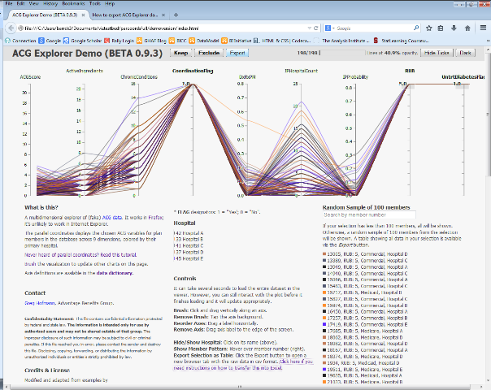
A new browser tab (or window) will open with the raw data displayed as a comma-separated values (.csv) text file.
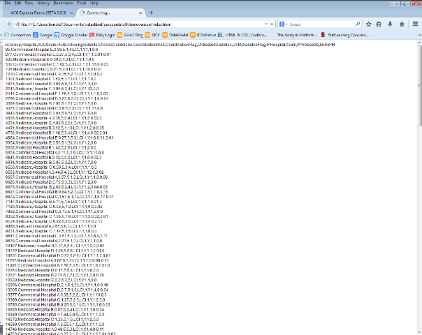
Select Edit > Select All (or use Ctrl-A).
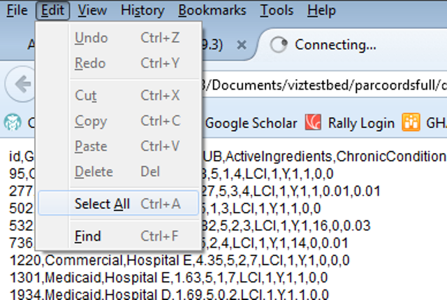
This will select all rows in the data window.
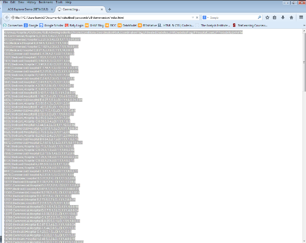
Select Edit > Copy (or use Ctrl-C).
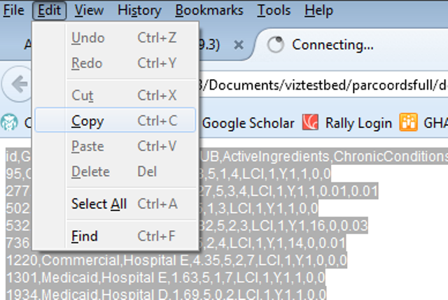
Open Excel and click the Paste button (or use Ctrl-V).

The data will appear in the A column.
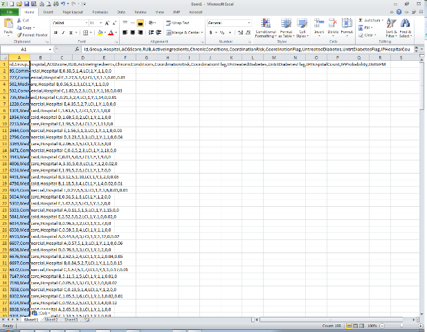
Click on the Data tab and then click the Text to Columns button.
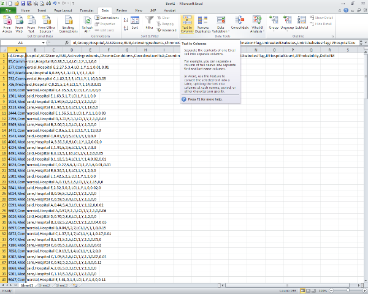
A conversion wizard window will pop up. Ensure that Delimited is selected, and click Next.
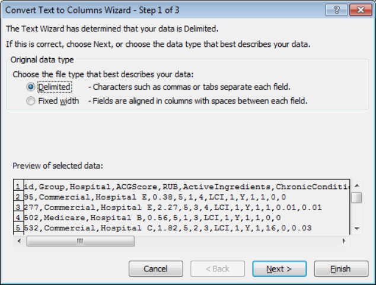
In the second window, select the Comma delimiter check box, then click Next. (Note: unchecking Tab is fine, but doesn't matter with these data, so not unchecking it is fine, too.)
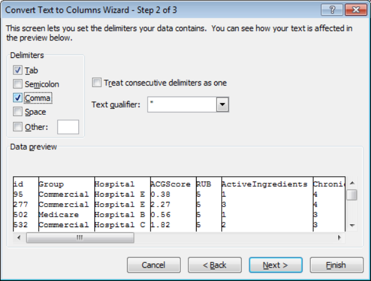
If you want to format the columns, it can be done here, but is not required. Click Finish.
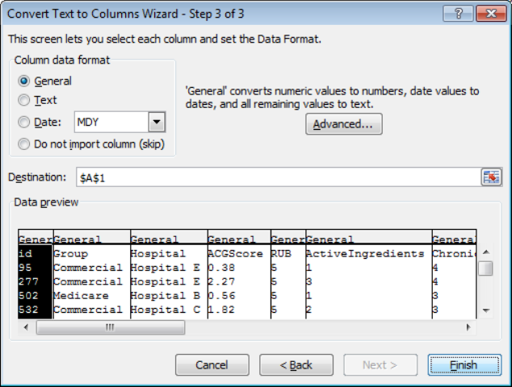
The data should now be in standard data table/Excel format. Save the file and use as needed.
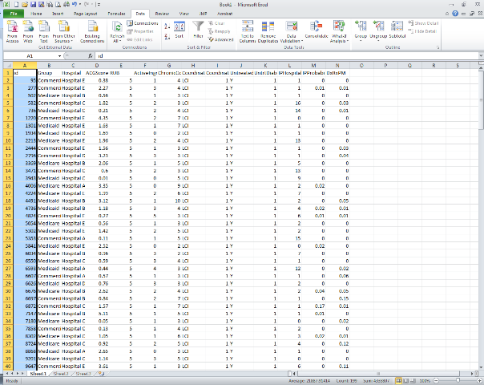